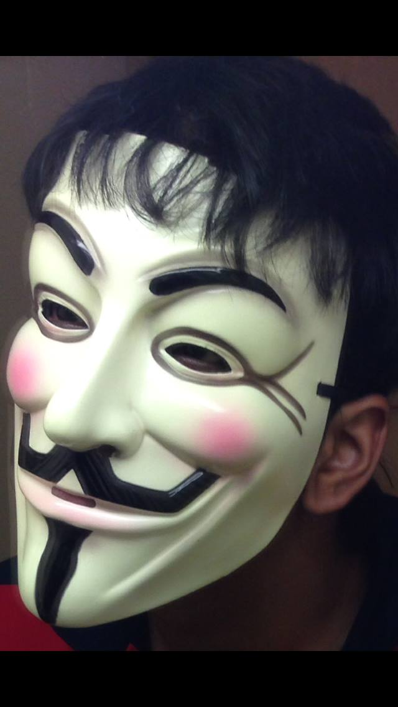
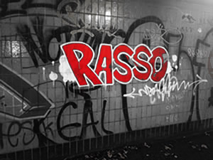
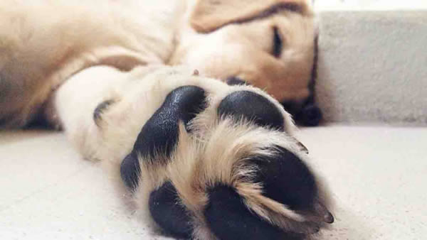
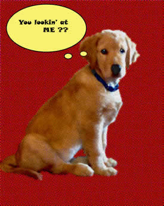

Ambar Sood
10 Feb 2014
The images that I have captured mean the world to me. I am very attached to my dog thus two out of the five images are of him. Majority of the images have been clicked with an iPhone 5 except the Landscape image. The editing on the images is done on Photoshop following the tutorials shown in class.
The images
Portrait (standard)
: I took this picture in the month of December. I was in my accommodation room trying to kill time when I see this mask hanging on the wall staring right back at me. This is when I decided to put on the mask, stand in front of the mirror and click a picture on my iPhone's front camera. This image is resized and no editing has been done to this image. This mask signifies anonymity. As Oscar Wilde once said, “Man is least himself when he talks in his own person give him a mask and he will tell you the truth.”
Portrait (Artistic)
: I took this picture in the month of January. I was walking back home and happened to meet a friend. We took a slight detour just so that we could have a look at the graffiti under a tunnel, which is located behind University campus. I took this picture with my iPhone and later edited on Photoshop. I applied the black and white effect to the image while enhancing the red colour on the word "Rasso".
Landscape
: I took this picture before arriving at Manchester. In the summer of 2012, I went to Malaysia for a holiday. It was then that I looked out of my hotel room window and saw the beautiful sunset overlooking the beach. I was in quite a hurry to take the picture because it looked so perfect at that moment. I used a Sony Cyber Shot digital camera to take the picture with no settings changed. Truthfully, this picture involved an element of luck. It was after capturing this image that I started taking photography seriously..
Object
: This is a picture of my dog, Junior, while he was sleeping in my room back in India. I approached him while he was sleeping and noticed that he has unusually large paws. With my iPhone, from a rather close distance, I took the picture intentionally to focus on his paw and not on the rest of his body.
Pop Art

This is an image of my dog (Junior) when he was still a puppy. He is the best subject to take pictures of because Golden Retrievers are generally very charming in their appearance. I took this picture back in India, which is where I am from, when Junior was looking out of the window. I took him by surprise, which is why he looks alert. I used my iPhone to click this picture from a distance of about 10 feet. Later on Photoshop, I removed the background and edited the picture to make it into a pop art image.
Return to top | Home